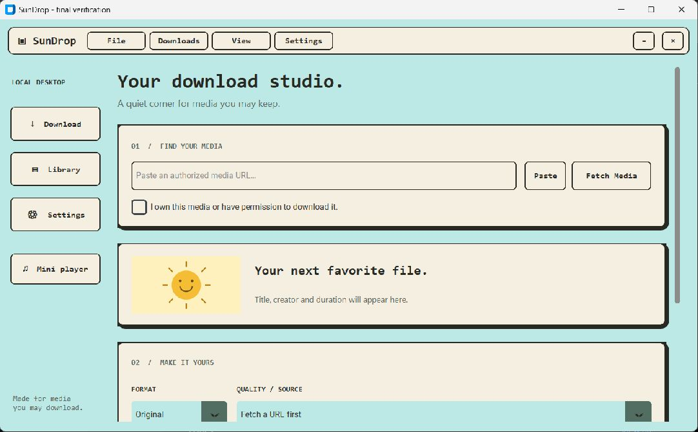

Your download studio.
Your little media shelf.
A calm retro desktop for media you have permission to keep. Fetch details, choose a format, save the cover and listen from your own library.
SunDrop runs as a Python desktop app on your computer. This page is its public showcase and download page.

Actual running SunDrop interface · 11 October 2026
Find and save
Preview the title, creator and source formats. Background tasks keep the window responsive while downloading.
Keep the cover
Save available artwork with your media. MP3 files can include embedded cover art and track details.
Make a little library
Browse saved files and play supported local audio with a floating player, progress and volume controls.
Start on Windows
Install Python 3.12, download and extract the project ZIP, then open PowerShell in the extracted folder.
py -3.12 -m venv .venv.\.venv\Scripts\python.exe -m pip install -r sundrop\requirements.txt.\.venv\Scripts\python.exe sundrop\app.py
FFmpeg is optional for MP3 conversion and merging. Only download media you own or have permission to save. Source availability and platform rules can vary.
Read the complete setup guide ↗